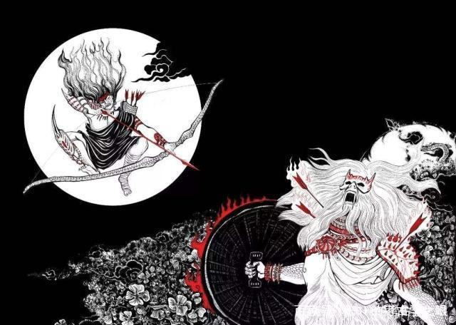
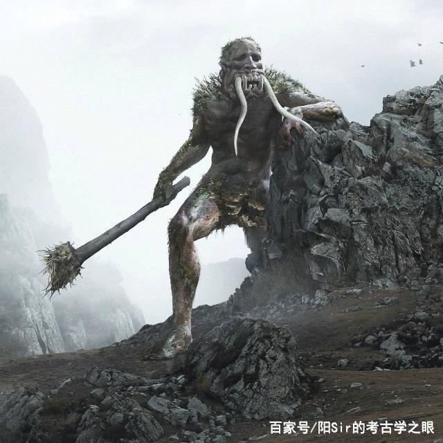

最早记载拔牙之俗的历史文献是《山海经》，说 羿与凿齿战于寿华之野，羿射杀凿齿。其中的“凿 齿”说的是有拔牙习俗的氏族。
关于被羿诛杀的怪兽“凿齿”，想必很多人会比较陌生，但我相信很多人都拔过牙吧？那么再看完这篇之后，相信你一定会“没齿难忘” 凿齿是兽还是人？ 第一段记载，《海外南经》云： “昆仑墟在其东，虚四方，一曰在歧舌东，为虚四方，羿与凿齿战于寿华之野，羿射杀之，在昆仑墟东。羿持弓矢，凿齿持盾，一曰戈”
这段话中描述了羿与凿齿激烈的战斗场面，提到了两个地点即“昆仑墟”和“寿华之野”此外，也交代了羿与凿齿各自的兵器，仅从这段记载来看，凿齿是人是兽，暂未可知！ 《大荒南经》亦云：“大荒之中，有山名曰融天，海水南入焉。有人曰凿齿，羿杀之” 这里则明确指出了“有人曰凿齿”，凿齿是人无疑！
羿与凿齿，战于寿华之野，羿射杀之。」记载着「凿齿」是一个与后羿战斗的神话人物，而后被后羿射杀。 实际上，凿齿应为古代南方部落的一种习俗。从地理范围来看，凿齿很可能是东夷的习俗，大约在十五至二十岁时会进行一次拔牙，这一时段被古人认为是进入青春期即将成年的时间，而拔牙则被看作一种相当于成人礼的行为。 与拔牙风俗相近的还有「染牙」。《大荒东经》中记载：「有黑齿之国。帝俊生黑齿，姜姓，黍食，使四鸟。